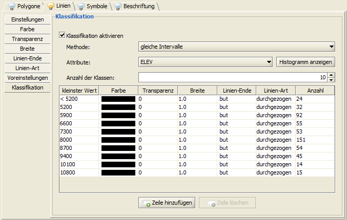

Farbrampen definieren |
|
Am Beispiel der Ebene SGID93_ELEVATION_Contours500Ft.shp wird nachfolgend das Erstellen einer Farbrampe schrittweise erläutert.
Zuerst diese Ebene in das geöffnete Projekt laden, selektieren und innerhalb des Kontextmenüs den Eintrag |
|
Die Klassifikation durch setzten des Häckchens aktivieren. |
|
 |
|
Mit der rechten Maustaste auf die Bezeichnung Farbe klicken und aus dem Kontextmenü Linienfarbe bearbeiten auswählen
|
|
Den Eintrag Farbschema aktivieren (voreingestellt ist immer Farbe fixieren ). |
|
Als Voreinstellung stehen drei Farben zur Auswahl, welche durch kleine Kästchen oberhalb der Farbrampe angezeigt werden.
Die Position dieser Kästchen kann durch Klicken+Ziehen mit der linken Maustaste oder durch Anklicken und anschließende Prozenteingabe im Position in % Feld verändert werden.
Über Hinzufügen können neue Farbfelder hinzugefügt und über Entfernen vorher selektierte Farbfelder entfernt werden. |
|
Nach dem Übernehmen der Rampe erscheint der neue Farbverlauf in der Anzeige und kann hier ggf. weiter bearbeitet werden.
Jede einzelne Farbe (bzw. jeder Wert in einer Zeile) kann durch Doppelklick mit der linken Maustaste einzeln verändert werden.
|
 Objekt-Darstellung bearbeiten anklicken.
Innerhalb des Startdialoges zur Darstellungsbearbeitung auf Darstellungsbearbeitung öffnen klicken und zum Reiter Linien >v Klassifikation navigieren.
Objekt-Darstellung bearbeiten anklicken.
Innerhalb des Startdialoges zur Darstellungsbearbeitung auf Darstellungsbearbeitung öffnen klicken und zum Reiter Linien >v Klassifikation navigieren.